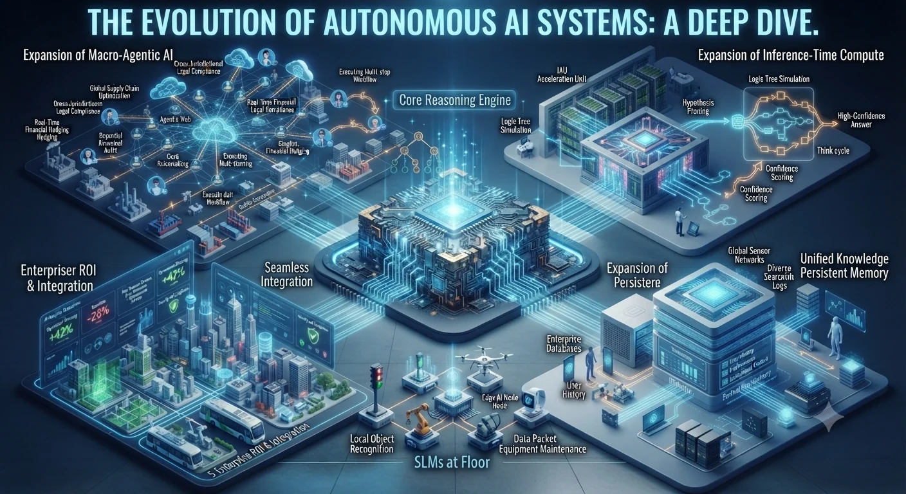

The artificial intelligence landscape has reached a quiet turning point. For years, the industry measured progress by how fluidly a model could converse, treating chat interfaces as the ultimate destination for digital intelligence. Today, that paradigm is receding. The conversation has shifted away from raw conversational polish and toward autonomous execution, structural efficiency, and practical integration.
Organizations and developers are no longer asking how eloquently an algorithm can answer a prompt. Instead, they want to know how independently it can plan a multi-step workflow, how deeply it can reason before speaking, and how seamlessly it can embed into existing enterprise infrastructure.
Agentic AI: The Rise of Autonomous Execution
The defining characteristic of modern AI development is the transition from passive suggestion to active execution. Traditional chat systems wait for a prompt, generate a response, and stop. Agentic systems, by contrast, operate on intent.
Given a high-level objective—such as auditing a cloud environment, resolving a complex customer support ticket, or compiling a cross-market financial analysis—an agentic system independently reasons, formulates a multi-step plan, interacts with external databases and application programming interfaces (APIs), and self-corrects when it encounters errors.
This shift transforms software from a static tool that humans operate into a digital colleague that handles execution loops autonomously. However, this capability introduces new engineering challenges, particularly regarding computational overhead. Because agents must read and re-read accumulated contexts across iterative tool calls, they consume significantly more tokens than standard chat interactions, making token economy and execution bounds critical design considerations.
Inference-Time Compute: Trading Speed for Depth
As scaling laws for raw training data begin to face diminishing returns, architectural focus has pivoted toward inference-time compute. Rather than relying entirely on immediate, reflexive text generation, modern reasoning models utilize internal computational chains of thought before delivering an output.
When faced with a complex logic puzzle, a software bug, or a legal contradiction, the model pauses to simulate multiple paths, critique its own hypotheses, and backtrack from dead ends. This deliberate computation happens entirely before a single visible token is produced. By dedicating more compute cycles to reasoning at the moment of inference, systems achieve dramatic leaps in logical reliability without requiring a full, expensive model retraining cycle.

Persistent Memory and Continuous Workflows
Isolated prompt-and-response sessions are rapidly giving way to persistent digital environments. Users and enterprises alike demand systems that remember context, historical preferences, and long-term project states across multiple interactions and devices.
This continuity enables AI to shift from a stateless assistant into an ambient workflow partner. By maintaining structured, long-term memory banks, agents can track multi-week projects, adapt to evolving user habits, and maintain institutional context without requiring users to re-explain their parameters at the start of every session.
The Edge Revolution: Small Language Models (SLMs)
While massive frontier models continue to power heavy enterprise reasoning in the cloud, Small Language Models (SLMs) are capturing a vital share of everyday deployment. Optimized to run efficiently on local hardware—such as laptops, tablets, and mobile phones—SLMs offer specialized utility without the latency, privacy risks, or bandwidth costs of cloud-dependent architectures.
For tasks like local document summarization, on-device code autocompletion, or localized data sorting, SLMs provide a fast, secure, and cost-effective alternative. This decentralization ensures that AI capabilities remain accessible even in offline or strictly regulated environments.
Model Commoditization and Enterprise ROI
Perhaps the most pragmatic trend in the current ecosystem is model commoditization. As foundational model capabilities become widely available and increasingly interchangeable, raw benchmark scores are losing their marketing power.
Enterprise focus has shifted away from which model boasts the highest score on academic tests and toward how effectively a model integrates into existing software stacks. The ultimate measure of success is no longer theoretical intelligence, but tangible return on investment—how smoothly an AI implementation reduces operational friction, automates repetitive overhead, and delivers measurable value to the bottom line.
Return to AI Technology, explore Semiconductor Technology, or read the ASARK AI Technology Journal.